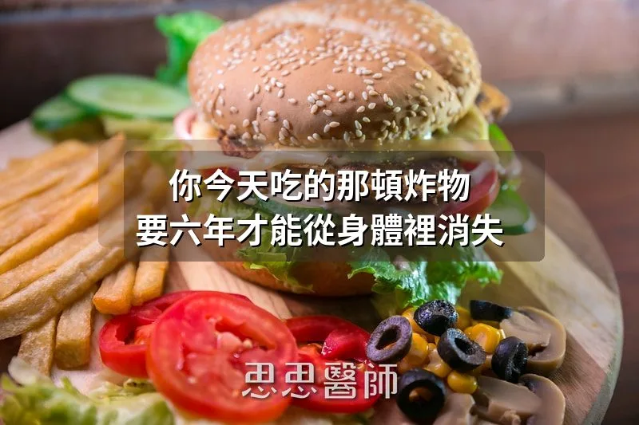

你今天吃的那頓炸物，要六年才能從身體裡消失

你中午吃了一份鹹酥雞，晚上來一盤炒飯，再配一碗酸辣湯。這些食物嚐起來沒什麼問題，但你可能不知道的是，這些餐廳和小吃攤使用的油，絕大多數是精煉植物油，也就是我們常說的「種子油（Seed Oils）」。大豆油、葵花油、玉米油、菜籽油，幾乎佔據了外食用油的九成以上。而這些油有一個共同特點：亞油酸（Linoleic Acid, LA）的含量極高。亞油酸是一種 Omega-6 脂肪酸，少量攝取是必要的，但問題在於我們現在吃的量已經遠遠超過身體的需求。
超過了會怎樣？先講一個讓我看到之後非常震撼的數據。2015 年，華盛頓大學的 Guyenet 和 Carlson 發表了一篇系統性回顧，分析了過去半世紀美國成人脂肪組織中的 LA 濃度變化。結果發現，從 1959 年到 2008 年，美國人脂肪組織中的亞油酸比例從 9.1% 上升到了 21.5%，增幅高達 136%。這代表的不只是飲食改變了，而是你身體的「組成」被改變了。你脂肪細胞裡超過五分之一的脂肪酸，現在都是 Omega-6。
那為什麼這很重要？因為亞油酸在體內被氧化後，會產生一類叫做 OXLAMs（氧化亞油酸代謝物）的促發炎物質。這些 OXLAMs 已經被大量研究證實與心血管疾病、癌症、阿茲海默症、非酒精性脂肪性肝炎（NASH），甚至慢性疼痛都有直接關聯。動物實驗顯示，OXLAMs 會啟動肝臟中的NLRP3 發炎體，觸發細胞凋亡。人體研究也發現，阿茲海默症和脂肪肝患者的血漿 OXLAMs 濃度顯著升高，甚至被提議作為疾病嚴重度的生物標記。
好消息是，人體試驗已經證實，降低飲食中的亞油酸攝取，可以顯著降低血漿中 OXLAMs 的濃度。也就是說，你的飲食確實能直接影響體內的發炎代謝物水平。但壞消息是：即使你從今天開始完全不碰種子油，那些已經儲存在你脂肪組織中的亞油酸，不會很快消失。
這是今天這篇文章最核心的數據：亞油酸在人體脂肪組織中的半衰期大約是 680 天，也就是將近兩年。「半衰期」的意思是，即使你完全停止攝取，兩年後你脂肪裡的 LA 也只會減少一半。要把儲存的 LA 換掉 95%，需要大約六年。研究也指出，你的脂肪組織要完全反映出新的飲食模式，大約需要三年的時間。換句話說，你今天吃進去的那些種子油，不是明天排掉就好了，它們會在你的身體裡駐留好幾年，持續影響你的發炎狀態和代謝健康。
很多人聽到這裡會覺得很絕望：「那我之前吃了這麼多年的外食，豈不是完了？」其實不需要這麼悲觀。脂肪組織的更新是持續進行的，你每一天的飲食選擇都在決定「新進去的脂肪酸是什麼」。雖然舊的 LA 需要時間才能被替換，但只要你從現在開始減少種子油的攝取，增加優質脂肪的比例，你的身體就會一天一天地把 Omega-6 換成更健康的脂肪酸。這是一場馬拉松，不是百米衝刺，但方向對了，每一步都有意義。
從實務面來說，我的建議是這樣的。第一，自己煮飯時選對油。橄欖油（特級初榨）、酪梨油、椰子油、草飼牛油都是比種子油更好的選擇。如果你需要高溫烹調，酪梨油和椰子油的穩定性比較好。第二，外食時有意識地選擇。煎、炒、炸幾乎都是用種子油，蒸、燙、燉的料理用油量比較少。如果可以自帶橄欖油淋在食物上，那是最理想的。第三，增加 Omega-3 的攝取。因為 Omega-6 和 Omega-3 會在體內競爭同一套酵素系統，增加 Omega-3（魚油、鮭魚、鯖魚、沙丁魚）可以在一定程度上「稀釋」Omega-6 的負面影響。
還有一點值得補充：種子油在高溫下特別容易氧化。餐廳的炸油通常反覆使用，每一次高溫加熱都會讓油中的亞油酸進一步氧化成更有害的 OXLAMs 和其他氧化產物。所以外食中最該避開的不是「油多」的食物，而是用回鍋油反覆高溫烹炸的食物。鹹酥雞、炸雞排、炸薯條，這些才是 OXLAMs 的最大來源。
你吃進去的脂肪不只是當下的熱量，它會成為你身體的一部分，留在你的細胞裡好幾年。每一餐選擇什麼油，不是在管理今天的體重，而是在決定未來三到六年你的發炎程度和代謝狀態。這個時間尺度很長，但反過來想：今天開始改變，三年後你就會是一個不同的身體。
（本文由我規劃架構與觀點，並協同 AI 校正與潤飾語句）
 空腹小雞跟思思醫師一起斷食，順便養一隻小雞來養小雞 →
空腹小雞跟思思醫師一起斷食，順便養一隻小雞來養小雞 →
好朋友週信
每週五一封：《健康駭客週報》這集的研究重點，加上家醫專欄這週的新文章。免費，隨時可以退訂。
延伸閱讀

每天多吃 10 克纖維，你的腸道和血糖都會感謝你
文中引述 Mark Hyman 的建議，每天多吃 10 到 20 克纖維可改善血糖控制與發炎，並提供加倍蔬菜量、纖維密度高食物等實用做法。

納豆激酶能溶解血管斑塊嗎？劑量與證據一次看清
納豆激酶的正向結果主要來自每天 10,800 FU 的高劑量，3,600 FU 無效，文中提醒使用抗凝血藥物者不可自行補充。

你喝的咖啡，最有價值的可能不是咖啡因
咖啡中最有價值的成分可能是綠原酸而非咖啡因，文中說它與血糖控制相關且怕熱，淺焙保留的含量遠高於深焙。